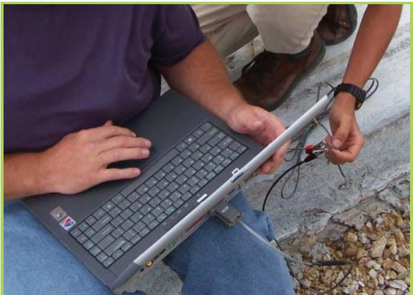
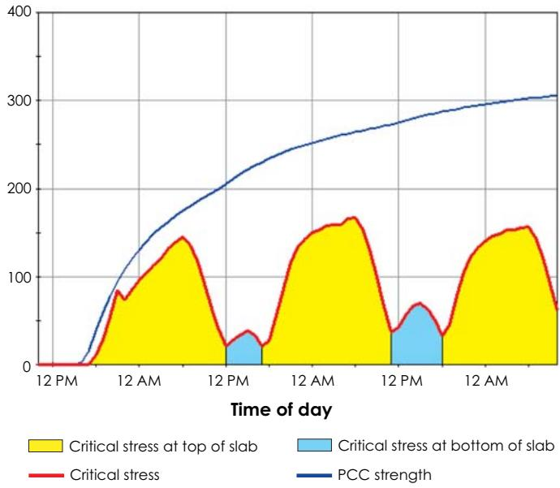
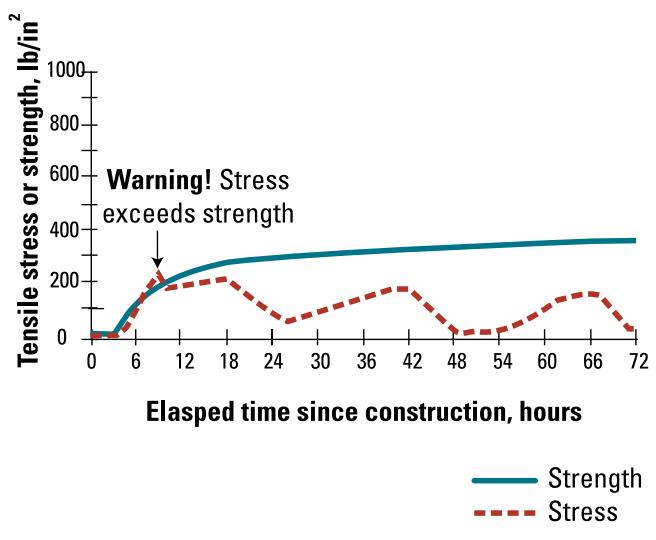
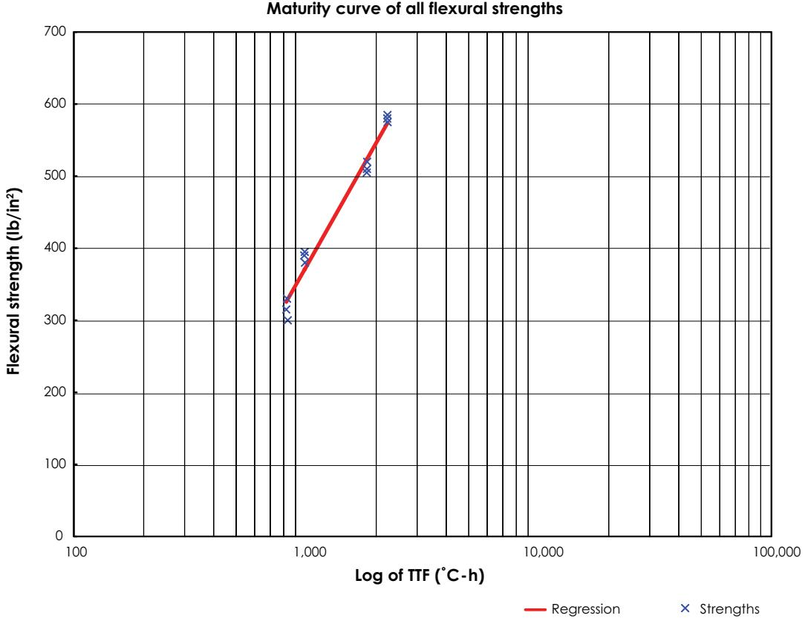
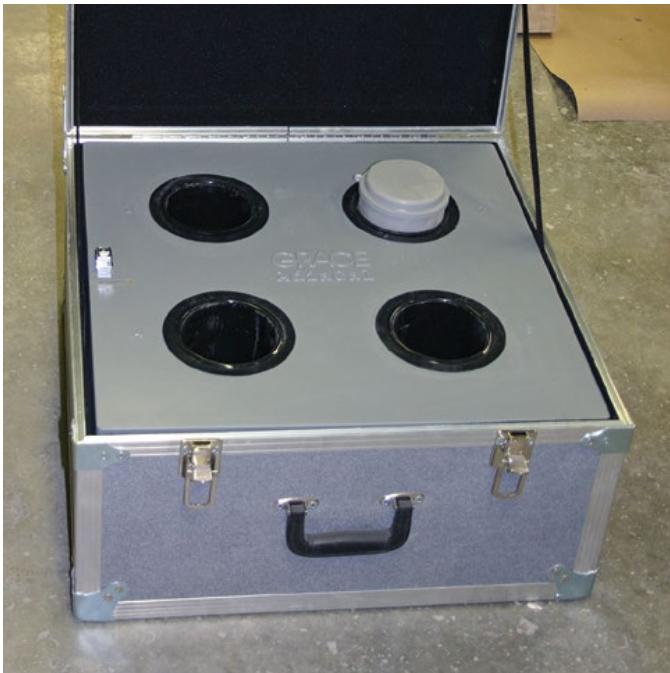
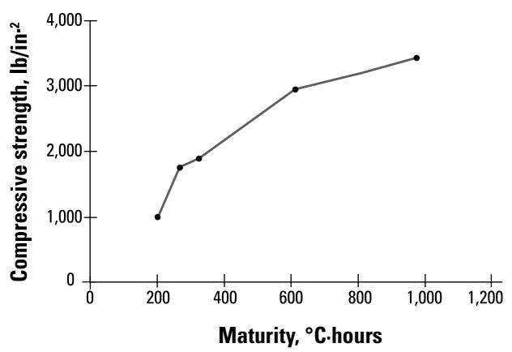
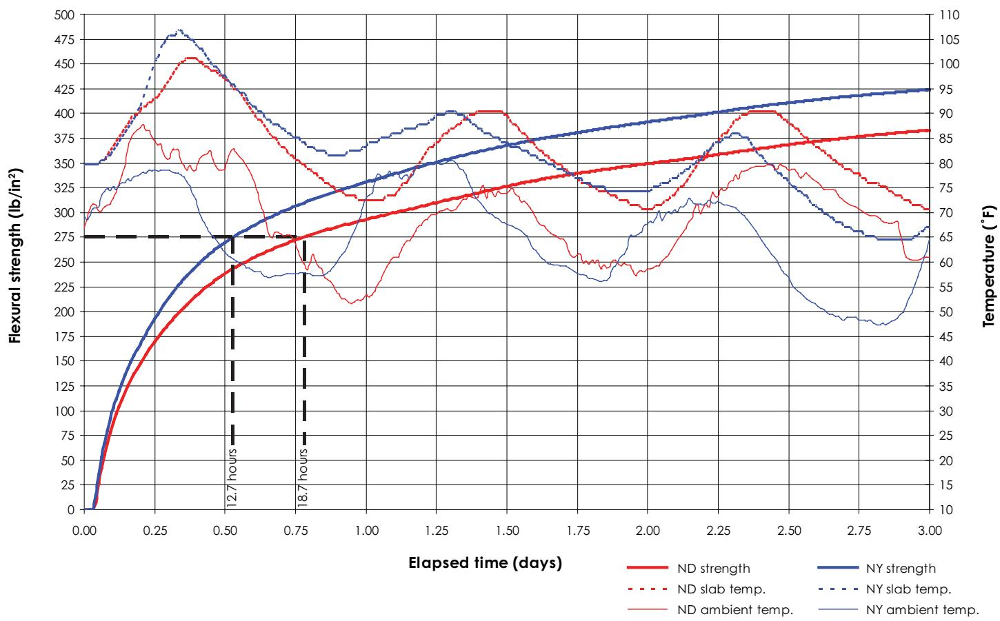
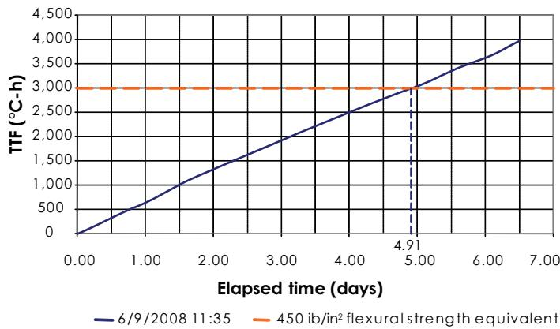

Concrete Maturity Strength Prediction
Concrete Maturity Strength Prediction is a quality‑control methodology that estimates the early‑age compressive and flexural strength (including modulus of rupture and modulus of elasticity) of in‑place cement‑based pavement by linking elapsed time and temperature to a mix‑specific maturity‑strength curve [1][3][4][5][7]. The process records slab temperature with embedded sensors, logs placement and sawing times, and applies laboratory‑derived time‑temperature versus strength relationships—typically via software such as HIPERPAV—to predict when target strengths will be reached and whether internal stresses exceed the developing strength [1][3][4][5][7]. When predicted stresses surpass the maturity‑based strength within the first 72 hours, the method flags a high risk of uncontrolled cracking and triggers corrective actions such as mix adjustments, altered curing, or delayed traffic opening, thereby managing early‑age cracking risk [1][3][5][7].
Sources (7)
Purpose and quality objectives
Across the guides, concrete maturity strength prediction evaluates the early‑age development of in‑place concrete compressive and flexural strength (including modulus of rupture and modulus of elasticity) by linking elapsed time and temperature to a mix‑specific maturity‑strength curve. The process monitors slab temperature with embedded sensors, records placement and sawing times, and applies laboratory‑derived correlation curves through software such as HIPERPAV to predict when target strengths will be reached and whether internal stresses will exceed the developing strength. By flagging periods where stress may surpass predicted strength, the method controls the performance characteristic of early‑age cracking risk and informs decisions such as opening the pavement to traffic or adjusting mix design, curing practices, or placement timing. [1][3][4][5][7]
The figure below illustrates the process of measuring in-place maturity.

Field technician downloading data from a concrete maturity sensor using a laptop. [7]The image shows a field technician connecting a wired probe to a portable computer, which is the procedure for downloading temperature-time function (TTF) data from an embedded sensor in the pavement. This process allows engineers to “Estimate the strength of the concrete pavement using computer software and the appropriate maturity curve.”
[1] — Ch. 3 (pp. 56–57), Ch. 6 (pp. 161–167), Ch. 9 (pp. 282–283); [3] — Ch. 6 (p. 141); [4] — 5. Plant Site and Mixture Prod… (p. 82); [5] — Ch. 6 (pp. 122–123); [7] — Ch. 3 (pp. 22–23), Ch. 7 (pp. 108–110), App. A (p. 119)
The guides state that Concrete Maturity Strength Prediction is employed to satisfy the quality requirement that newly placed pavement achieve its required early‑age compressive or flexural strength before it is subjected to service stresses such as traffic loading or sawing. By continuously recording slab temperature and applying a mix‑specific time‑temperature‑strength correlation, engineers can estimate in‑place strength and compare it with induced stresses during the first 72 hours. When the estimated stress exceeds the predicted strength, the method flags a high potential for uncontrolled cracking and calls for corrective actions—adjusting mix composition, curing practices, placement timing, or delaying traffic—to prevent premature failures such as slab cracking, dowel‑bar socketing, or crushing. [1][3][4][5][7]
The following figure illustrates an example of HIPERPAV output showing tensile stress and strength in lb/in².

Example HIPERPAV output showing tensile stress and strength (lb/in²) [7]The figure displays a graph plotting critical stress against PCC strength over the time of day. A blue line representing PCC strength rises continuously, while red lines and shaded areas indicate critical stress at the top and bottom of the slab fluctuating with daily cycles. When stress approaches or exceeds strength, the probability of early cracking is increased.
[1] — Ch. 3 (pp. 56–57), Ch. 6 (pp. 161–167), Ch. 9 (pp. 282–283); [3] — Ch. 6 (p. 141); [4] — 5. Plant Site and Mixture Prod… (p. 82); [5] — Ch. 6 (pp. 122–123); [7] — Ch. 3 (pp. 22–23), Ch. 7 (pp. 108–110)
Scope and applicability
Across the guides, concrete maturity‑strength prediction is described as applicable to any cement‑based pavement concrete whose mix design is known—including Portland‑cement mixes and those using limestone, gneiss or gravel aggregates and a range of water‑to‑cement ratios. It can be used for new slab construction on conventional or fast‑track schedules, for slabs that will later be sawed to form joints, and for full‑depth repair sections (including 1.8 m and 4.6 m slabs with dowel bars). The procedure covers the in‑place concrete slab as a pavement component, the associated laboratory specimens (beams or cylinders) used to develop mix‑specific maturity‑strength curves, and related elements such as subbase/subgrade support, slab geometry, curing practices, and environmental conditions. Implementation requires recording the time‑temperature history of the placed concrete (and a representative test cylinder), logging placement and saw‑cutting times, embedding temperature sensors, and applying a laboratory‑derived curve per ASTM C1074/C31. Software tools such as HIPERPAV® or HIPERPAV II incorporate mix design, slab thickness, k‑value, dowel size, and weather variables to generate early‑age strength and stress predictions for the first 72 hours, supporting decisions on traffic opening and crack risk management. [1][3][4][5][7]
The following figure illustrates the practical application of these predictions by demonstrating how software tools can identify specific risks during early-age curing.

HIPERPAV output showing predicted stress exceeding allowable strength, indicating a high risk of cracking. [1]The figure displays the output of the HIPERPAV program, plotting tensile stress and strength over a period of 72 hours since construction. It illustrates the concept by showing that when predicted stresses exceed allowable stress (developed strength), cracking is indicated as likely, which triggers necessary changes to mix or practices. The plot specifically highlights a warning where stress exceeds strength at approximately six hours after paving, demonstrating how the method flags high risk of uncontrolled cracking.
[1] — Ch. 3 (pp. 56–57), Ch. 6 (pp. 161–167), Ch. 9 (pp. 282–283); [3] — Ch. 6 (p. 141); [4] — 5. Plant Site and Mixture Prod… (p. 82); [5] — Ch. 6 (pp. 122–123); [7] — Ch. 3 (pp. 22–23), Ch. 7 (pp. 108–110)
Concrete maturity strength prediction is not mandated by the guidance but is recommended as an optional tool when a repair must be opened to traffic very soon after placement—typically within four hours of casting. In such early‑opening cases, practitioners may use maturity meters or pulse‑velocity devices to estimate actual strength, and software such as HIPERPAV II can model strength development and stress for the first 72 hours to flag potential cracking; otherwise, standard compressive‑ and flexural‑strength criteria are applied without a maturity prediction. The approach is limited to early‑opening scenarios and depends on accurate input of mix, curing, and environmental data. [5]
[5] — Ch. 6 (pp. 122–123)
Test methods and procedures
Concrete maturity strength prediction follows the standardized methods ASTM C918 and ASTM C1074. The guides require a laboratory program that establishes a time‑temperature versus strength curve for the exact mix design used on site, and then applies that calibrated curve to field temperature data, often with HIPERPAV III software (v3.3).
The required equipment includes a personal computer running HIPERPAV, temperature sensors (or data loggers such as the Flex Maturity Logger, Comp Maturity Logger, and IQ Drum devices), standard strength specimens (beams or cylinders) cured together, a hydraulic loading frame for compressive/flexural testing, and a data acquisition system to download temperature histories.
Step‑by‑step procedure: 1. Cast thirteen concrete strength specimens using the project mix; embed a temperature sensor in one specimen solely for recording temperature over time while the remaining twelve are reserved for strength testing. 2. Start the designated data loggers at prescribed times (e.g., Comp Maturity Logger at 8:45 AM, Flex Maturity Logger at 9:00 AM; IQ Drum at its start time). 3. After three hours from placement take the first pin or temperature‑monitor sample and record fresh‑concrete properties—slump, air content, flow, unit weight, water content, and set time measured by penetration resistance. 4. Continuously measure and record the temperature of each specimen (and the in‑place slab) using the embedded sensor or surface loggers; download the data to the computer. 5. Break three specimens at each of four ages (commonly 1, 3, 5, 7 days), test their compressive (or flexural) strength on a hydraulic loading frame, and average the results for each age. 6. Compute the time‑temperature factor (TTF) for each age using the ASTM‑defined equation M(t)=Σ(Ta–T0)Δt, plot log TTF versus measured strength, and fit a smooth maturity curve. 7. In the field, embed a temperature sensor (thermocouple or equivalent) at a critical slab location; use a maturity meter to log temperatures, download the data, calculate cumulative M(t), and apply ASTM C1074 procedures to convert the in‑place maturity index to an estimated concrete strength. If the field maturity deviates from the calibrated curve, additional sensors or more frequent readings are employed.
The resulting maturity curve links measured temperature history to concrete strength, enabling prediction of when target pavement opening strengths will be achieved. [1][3][7]
The following figure illustrates the maturity curve derived from this relationship.

Maturity curve of all flexural strengths [7]The figure displays a semi-logarithmic plot with the x-axis representing the Log of TTF (°C-h) and the y-axis showing Flexural strength in lb/in². Several data points marked as ‘Strengths’ are plotted, with a red regression line fitting through them to establish a trend.
[1] — Ch. 6 (pp. 165–167), Ch. 9 (pp. 282–283); [3] — Ch. 6 (p. 141); [7] — Ch. 7 (pp. 108–110), App. A (p. 119)
Valid maturity‑strength predictions depend on three control elements. First, all laboratory strength specimens must be cured together in a single location that provides a uniform, constant temperature environment. Second, a temperature sensor must be fully embedded in a dedicated specimen and later in the pavement; the sensor’s time/temperature factor (TTF) is downloaded and recorded for each set of specimens at breakage and used with software to generate a smooth maturity curve. Third, operators are required to follow the prescribed ASTM/AASHTO procedures exactly; the guides do not specify additional qualification or calibration steps beyond proper installation and use of the sensors. [1][7]
[1] — Ch. 9 (p. 283); [7] — Ch. 7 (p. 110)
Sampling and testing frequency
The sampling plan for concrete maturity strength prediction is built around a fixed set of on‑site cast cylinders and continuous temperature monitoring at critical points in the pavement. All guides require that thirteen strength specimens be cast from the same mix used for placement; one cylinder is completely embedded with a temperature sensor for continuous recording, while the remaining twelve are cured together and broken in groups of three at four predetermined ages (typically one, three, five and seven days) with the results averaged to develop the maturity curve. Sensors must be installed at locations that represent the thermal behavior of the slab – the manuals specify placement at the critical concrete surfaces (top or bottom, often mid‑height), whereas other guidance calls for installation directly in the pavement at representative points. Temperature data are collected on a schedule sufficient to capture temperature variations: some specifications call for readings at least twice daily, noting that more frequent intervals improve accuracy, while another source recommends recording sensor output every hour and logging placement, sawing times, and slab temperatures for each section. [1][4][7]
The following figure illustrates a typical field semi-adiabatic temperature monitoring system used to capture the thermal data required for this process.

A field semi-adiabatic temperature monitoring system for mortar. [1]The image displays a portable aluminum carrying case containing a gray interface panel with four circular ports designed to hold cylindrical specimens or sensors. This apparatus is identified as a semi-adiabatic calorimetry system used for observing hydration kinetics and measuring heat gain, which are critical parameters in the concrete maturity strength prediction methodology. By monitoring these thermal properties, engineers can estimate pavement temperatures and assess the potential for early-age cracking.
[1] — Ch. 6 (pp. 165–167), Ch. 9 (p. 283); [4] — 5. Plant Site and Mixture Prod… (p. 82); [7] — Ch. 7 (p. 110)
To obtain a representative maturity prediction, samples must be taken from the same mix batch that will form the pavement and prepared as standard concrete cylinders or beams per recognized methods (e.g., ASTM C31/AASHTO T 23). A sufficient number of specimens—commonly thirteen—are cast on‑site from material mixed at the project site. One specimen is fully instrumented with an embedded temperature sensor and left unbroken to record the time‑temperature history; the remaining specimens are cured together in a single location under uniform conditions. Strength tests are performed at several early ages (e.g., 1, 3, 5, 7 days), breaking three specimens at each age and averaging the results to develop a statistically sound maturity curve according to ASTM C1074. In the field, temperature sensors are installed in the slab (typically on the top, bottom, or mid‑height) and read at least hourly; placement time, saw‑cut times, and corresponding slab temperatures are logged. The sensor data are downloaded and compared with the laboratory maturity curve using software such as HIPERPAV®, providing a strength prediction that represents the material, mixing/placement process, production lot, and completed pavement. [1][4][7]
The following figure illustrates a sample maturity curve derived from this process.

A sample maturity curve plotting compressive strength against time-temperature history. [1]The figure displays a plot with the x-axis representing Maturity in °C-hours and the y-axis representing Compressive strength in lb/in², showing an upward trend where strength increases as maturity increases. This graph serves as a “Sample maturity curve” used to estimate concrete pavement strength based on the time-temperature history of the material. The relationship depicted illustrates how a mix-specific curve links elapsed time and temperature to compressive strength, which is essential for predicting when target strengths are reached.
[1] — Ch. 6 (pp. 165–167), Ch. 9 (pp. 282–283); [4] — 5. Plant Site and Mixture Prod… (p. 82); [7] — Ch. 7 (p. 110)
Acceptance criteria and tolerances
Concrete maturity strength prediction is considered acceptable when the predicted compressive and flexural strengths meet established minimums for opening fast‑track repairs to traffic. State practice typically requires at least 13.8 MPa up to 20.7 MPa compressive strength and 2.0–2.8 MPa flexural strength, while FHWA sets an absolute floor of 2.5 MPa flexural strength (3.1 MPa when heavy edge loading is expected). Additional compressive‑strength limits are applied based on dowel bar size—13.8 MPa for 38 mm bars and 17.2 MPa for 32 mm bars—to prevent crushing around the dowels. If software such as HIPERPAV II shows that early stresses exceed these strength predictions, the work is flagged as unacceptable and mix, curing, or placement adjustments are required. [5]
[5] — Ch. 6 (pp. 122–123)
Quality control and process monitoring
To keep concrete quality consistent, the maturity‑strength prediction program must continuously monitor a suite of inter‑related characteristics throughout production and construction. “First, the slab’s temperature history is recorded with embedded thermocouples or thermistors placed at representative points (top, bottom or mid‑height) and logged at short intervals so that a time‑temperature factor can be calculated.” “Second, the elapsed time since placement is captured alongside temperature to form the maturity index that drives strength estimation.” “Third, mix‑specific parameters such as water‑cement ratio and air content are tracked because they directly influence the rate and magnitude of strength gain; a lower water‑cement ratio raises strength while increasing air reduces it.” “Fourth, a calibrated maturity curve—developed from standard‑strength specimens cured under controlled conditions—is used to translate the temperature‑time data into an in‑place strength estimate, which is updated in real time by dedicated software.” The system also “must continuously track the elapsed time and the temperature history of the fresh mix so that the laboratory‑derived time‑temperature‑strength curve can be applied on site” and “compare the developing strength against any imposed stresses, because exceeding the predicted strength signals a risk of uncontrolled cracking.” When discrepancies arise, “the program should flag the need to adjust mix design parameters, curing regimes, or the timing of placement.” Production records “the exact times of paving and subsequent sawing together with the slab temperature”; “temperature sensors must be placed in the pavement and read at least hourly so that the temperature history can be correlated to the interval between placement and sawing.” All data are fed into HIPERPAV®/HIPERPAV II software, which models early‑age stress and strength, plots strength versus induced stress for the first 72 hours, and flags any condition where “stress exceeds the measured strength” prompting corrective actions. Concrete strength is also monitored directly using “maturity meters or pulse‑velocity devices” and compared against required compressive (e.g., 13.8 MPa) and flexural strengths. Additional inputs include “material properties and mixture proportions … together with subbase conditions such as support capacity, friction characteristics and subbase temperature,” “ambient weather (temperature, humidity, wind, cloud cover) and slab dimensions (length, width, thickness),” and other parameters such as slump, air pressure, flow, set time, unit weight and microwave‑determined water content. By maintaining this comprehensive monitoring regime, the predicted in‑place strength remains within expected limits, ensuring consistent concrete quality. [1][3][4][5][7]
[1] — Ch. 3 (pp. 56–57), Ch. 6 (pp. 161–167), Ch. 9 (pp. 282–283); [3] — Ch. 6 (p. 141); [4] — 5. Plant Site and Mixture Prod… (p. 82); [5] — Ch. 6 (pp. 122–123); [7] — Ch. 7 (pp. 108–110), App. A (p. 119)
If the stress exceeds the strength at any time, a high potential for uncontrolled cracking is indicated. This trigger applies when pavement analysis models or on‑site measurements show that predicted tensile, compressive, or flexural stresses surpass the maturity‑derived strength curve at any point, including within the first 72 hours of service. The guides also require that the time‑temperature versus strength relationship be determined in the laboratory for the specific mixture used in the construction project. When such exceedances occur, a high risk of cracking demands adjustments to mix design, curing regime, or placement timing and often additional testing.
If on‑site maturity meters or pulse‑velocity measurements indicate compressive or flexural strengths below the minimum thresholds (for example, less than 13.8 MPa compressive for slabs with 38 mm dowels or below the FHWA‑recommended 2.5 MPa flexural strength), further curing, mix modification, or delayed opening is required.
The guides emphasize that abnormal early‑age strength development is another trigger. When “When the observed rate at which a mix gains strength deviates noticeably from that of comparable mixtures—such as taking substantially longer to reach an early‑age flexural strength target—or when premature random cracking appears in the newly placed pavement, these signs should prompt immediate process adjustments and/or additional maturity testing,” corrective actions must be taken. For example, “ND-517 reached an estimated 275 psi in 18.7 hours, while NY-606 reached the same value in 12.7 hours,” illustrating a slower progression that warrants attention. These data support the fact that it is important to monitor strength development.
Maturity methods, conducted in accordance with ASTM C1074, can be used to assess the strength of in‑place concrete pavements. For such cases, adjustments can be made to mix properties, curing practices, or the time of concrete placement to reduce the potential for cracking. [3][5][7]
The following figure illustrates how these maturity-based assessments inform adjustments to concrete mix and placement practices.
 Example plot of compressive strength versus maturity for a concrete mixture. [3]
Example plot of compressive strength versus maturity for a concrete mixture. [3]
The figure displays a curve plotting compressive strength against maturity, demonstrating the time-temperature versus strength relationship required by ASTM C1074 to assess in-place concrete pavements. This resultant curve is used to estimate the time at which desired concrete strength is expected to be reached for a specific mixture.
[3] — Ch. 6 (p. 141); [5] — Ch. 6 (pp. 122–123); [7] — Ch. 3 (pp. 22–23)
Nonconformance and corrective action
Work should be corrected or adjusted whenever the HIPERPAV II analysis shows that predicted stresses exceed the maturity‑based strength, prompting changes to mix design, curing or placement timing; if early‑age measurements (e.g., from a maturity meter) indicate that the concrete has not yet reached the minimum required strengths—2.5 MPa flexural for any fast‑track opening, 3.1 MPa when heavy edge loading is expected, or the dowel‑specific compressive limits of 13.8 MPa (38 mm bars) and 17.2 MPa (32 mm bars)—the slab must be retested or the work rejected. When measured strength meets those minima but is close to them, the project may be accepted with adjustments such as extended curing; if values fall well below the absolute minimum flexural strength, the work should be rejected outright. [5]
[5] — Ch. 6 (pp. 122–123)
Documentation and reporting
The documentation package shall contain a complete log of the temperature‑time data (TTF) recorded from the instrumented specimen and any in‑place sensors, together with the temperature history captured by the fully embedded sensor specimen and hourly temperature sensor readings taken from the pavement. It must also record the paving start time, the sawing time, and the slab temperature to enable correlation of temperature changes with elapsed time since placement.
Concrete compressive strength results obtained at one, three, five and seven days for the three broken specimens at each age shall be entered, with measured concrete strengths obtained by breaking three specimens at each prescribed age and averaging them. The sampling plan requires casting thirteen strength specimens on site, with one dedicated to temperature monitoring that is retained unbroken; the remaining twelve are used for strength testing.
The file must include the laboratory‑derived time‑temperature versus strength curve for the exact mix used on the project, as required by testing performed in accordance with ASTM C1074, and a plotted maturity curve (strength versus log TTF) showing TTF on the horizontal axis, strength on the vertical axis, and the fitted smooth curve used by the software to estimate in‑place pavement strength.
Any instances where the predicted stress exceeds the estimated strength shall be documented, together with corrective actions taken such as modifying mix properties, curing methods, or placement timing; deviations from expected curves also trigger corrective actions. [1][3][4][7]
The following figure illustrates a generalized stress-strain curve for concrete.
 Generalized stress-strain curve for concrete [1]
Generalized stress-strain curve for concrete [1]
The figure displays a generalized stress-strain curve illustrating the relationship between applied load and deformation in cementitious materials. It identifies the elastic range, permanent set resulting from inelastic deformation, and defines the modulus of elasticity as the ratio of stress to strain within that linear region.
[1] — Ch. 9 (p. 283); [3] — Ch. 6 (p. 141); [4] — 5. Plant Site and Mixture Prod… (p. 82); [7] — Ch. 7 (p. 110)
The guides require that quality records capture all time‑temperature information needed for maturity‑strength prediction. Records must log the exact time each paving operation occurs, the time of sawing, and slab temperature measured by sensors installed in the pavement and read at least hourly. For strength specimens, the time‑temperature factor (TTF) at breaking and the corresponding compressive strengths at prescribed ages are recorded. The collected data are plotted as a maturity curve with log TTF on the x‑axis and concrete strength on the y‑axis, and a smooth fitted line is generated using software such as HIPERPAV® or other calibrated programs. Review of the records involves importing the temperature‑time history into the software to model early‑age stress and strength, comparing the plotted points and fitted curve against expected trends and required opening strength, and confirming that predicted stresses remain below cracking thresholds and that predicted in‑place strength meets specifications. Once validated, the documented maturity curve and model outputs are used to accept the pavement, provide a baseline for future performance monitoring, and support any later adjustments to mix design or curing practices. [4][7]
[4] — 5. Plant Site and Mixture Prod… (p. 82); [7] — Ch. 7 (p. 110)
Relationship to long-term performance
Measured concrete strength obtained through maturity testing—recorded as a time‑temperature‑strength curve per ASTM C1074 and validated with field sensors or pulse‑velocity devices—is compared against calculated early‑age stresses to assess the pavement’s ability to resist distress over its service life. Across the guides, if at any point the predicted stress exceeds the measured strength, a high potential for uncontrolled cracking is indicated, which signals reduced durability and shortened service life. The software tools (HIPERPAV®/HIPERPAV II/III) use logged paving time, sawing time, slab temperature, and hourly sensor data to generate early‑strength predictions and internal stress histories for the first 72 hours; this enables engineers to identify when stresses may surpass strength and to take corrective actions such as adjusting mix design, curing practices, or delaying traffic loading. Specific acceptance criteria are provided: a minimum flexural strength of 2.5 MPa (or higher for slabs with dowel bars) must be reached before early opening, and mixes that achieve target early strengths more rapidly—e.g., NY‑606 reaching 275 psi in ~13 hours versus ND‑517 requiring ~19 hours—demonstrate greater resistance to early‑age cracking and consequently longer expected service life. Monitoring the rate of strength gain therefore serves as a reliable predictor: slower‑gaining mixes that fail to develop sufficient stiffness quickly have been observed to crack randomly, necessitating repairs that compromise pavement homogeneity and durability. [3][4][5][7]
The figure below illustrates the early-age estimated in-place flexural strength for the ND and NY mixes discussed above.

Early-age estimated in-place flexural strength (ND & NY) [7]The figure plots the flexural strength of two concrete mixes, ND and NY, against elapsed time over a three-day period.
[3] — Ch. 6 (p. 141); [4] — 5. Plant Site and Mixture Prod… (p. 82); [5] — Ch. 6 (pp. 122–123); [7] — Ch. 3 (pp. 22–23), Ch. 7 (p. 108)
After placement, embedded temperature sensors remain active throughout the service period and are supplemented by surface‑mounted sensors that continue recording the pavement’s thermal history. Their data are retrieved on a regular schedule—often twice each day as required by many jurisdictions—and periodically downloaded into commercial maturity meters or laboratory‑derived software to calculate the time‑temperature factor (TTF) and update the estimated in‑place strength. Early‑age cylinder specimens tested after 24 hours (ASTM C918) are compared with the computed maturity index to validate or adjust the mix‑specific curve. Practitioners also employ maturity meters or pulse‑velocity equipment to measure in‑situ concrete strength and compare it with minimum compressive or flexural strengths required for fast‑track openings. The recorded TTF values, together with any pulse‑velocity results, are entered into software such as HIPERPAV II or equivalent programs to confirm that stresses have not exceeded strength during the first 72 hours and that the pavement reaches the required opening strength. If predicted or measured strengths fall below acceptance thresholds, additional curing measures, extended cure time, or mix adjustments are applied before traffic is allowed, providing a post‑construction check and alerting owners to any remedial actions needed. [1][5][7]
The following figure illustrates the concept of in-place pavement maturity.

Graph showing the relationship between elapsed time and Time-Temperature Factor (TTF) for in-place pavement maturity. [7]The figure displays a plot of the Time-Temperature Factor (TTF) on the vertical axis against elapsed time in days on the horizontal axis, illustrating how this factor increases linearly over the first several days. This visualization supports Concrete Maturity Strength Prediction by showing how embedded temperature sensors and software calculate a time-temperature factor to estimate early-age flexural strength for in-place cement-based pavement.
[1] — Ch. 6 (pp. 165–167), Ch. 9 (pp. 282–283); [5] — Ch. 6 (pp. 122–123); [7] — Ch. 7 (p. 110)
References
- Integrated Materials and Construction Practices for Concrete Pavement: A State-of-the-Practice Manual (2nd edition IMCP Manual, 2019) [link]
- Best Practices Manual: Quality Control and Quality Acceptance of Concrete Airport Pavement [link]
- Concrete Pavement Preservation Guide (3rd Edition–Optimized for fast web viewing–2022) [link]
- Field Reference Manual for Quality Concrete Pavements (2012) [link]
- Concrete Pavement Preservation Workshop Reference Manual (2008) [link]
- The Use of Ternary Mixtures in Concrete (Manual–2014) [link]
- Testing Guide for Implementing Concrete Paving Quality Control Procedures (2008) [link]